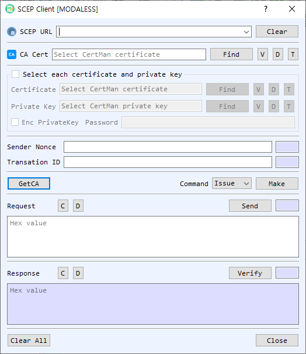

SCEP Client Dialog Guide
The SCEP Client creates and sends Simple Certificate Enrollment Protocol requests to a CA. It supports certificate Issue, Update, and GetCRL operations, plus retrieval of the CA certificate.

Figure 1. SCEP Client dialog with Issue selected. Use GetCA to retrieve CA certificate information, then create and send the selected request.
Screen Areas
- SCEP URL — Enter or select the SCEP endpoint. Clear clears the saved URL list/input.
- CA Cert / GetCA — Select a CA certificate with Find, or use GetCA to retrieve the CA certificate from the SCEP server. V, D, and T view, decode, or identify it.
- Select each certificate and private key — Enable this group to select client certificate/private-key files directly. Otherwise, use CertMan. Enable Enc PrivateKey and enter the password for an encrypted key.
- Sender Nonce / Transaction ID — View or enter the SCEP sender nonce and transaction identifier used to correlate requests and responses.
- Command / Make — Choose Issue, Update, or GetCRL, then select Make to build the corresponding request.
- Request — Displays the request in hexadecimal. Send transmits it to the SCEP endpoint. C clears and D decodes the request.
- Response / Verify — Displays the server response. Verify checks the SCEP response; C clears and D decodes it.
- Clear All / Close — Clear dialog data or close the client.
Issue a Certificate
- Enter the SCEP URL and select the CA certificate. Use GetCA if you need to retrieve the CA certificate from the server.
- Select Issue and choose Make. The client opens key-pair and CSR dialogs to create enrollment material and prepares the SCEP request.
- Select Send to submit the request. Review the response and choose whether to save issued certificate and key material when prompted.
Update a Certificate or Retrieve a CRL
- Enter the SCEP URL and select the CA certificate.
- Select Update or GetCRL. Provide the existing certificate and private key when requested.
- Select Make, then Send to submit the generated request.
- Use Verify to check the response and D to inspect its encoded contents.
Notes
- Issue creates new key/CSR material as part of request preparation. Update and GetCRL use existing certificate/key context.
- Keep sender nonce and transaction ID associated with their request/response exchange.
- Protect private-key passwords and enrollment credentials. Confirm the server response before using newly issued credentials.